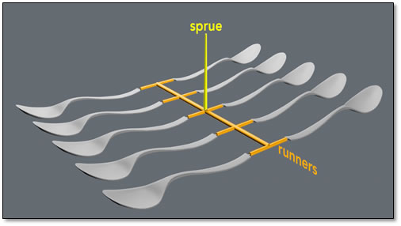
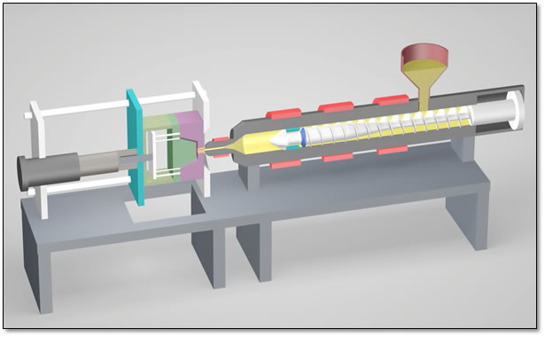
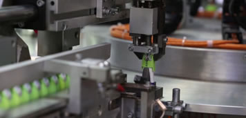

History and background

Playmobil was developed by Hans Beck (a German cabinet maker and an avid hobbyist) in the year 1972. Through the research Beck conducted, he came up with a toy that was relatively simple, not flexible and not too rigid. The toy he came up with, standed at a height of 7.5cm, which could fit in the palm of a child easily, with facial features similar to what children produce while drawing (a large head, nice big smile and no nose and ears) that could bend at the hip. In the year 1973 there was an oil crisis, Beck was concerned that oil prices would keep rising, and since plastic is a byproduct of oil, hence plastic prices will rise. Therefore his creation of the hollow plastic toy that used the least amount of plastic was considered viable.
Currently in Europe there are 3 main factories that produce playmobil. These are located in Germany, Spain and Malta. Each factory location is responsible for making a specific area of manufacturing. Germany specializes in making big items such as ships and houses, Spain specializes in making accessories and Malta specializes in making the figures and a few accessories. These parts are then shipped between the factories to complete sets.
Playmobil uses a flexible manufacturing system in order to gain a competitive advantage.
Plastic Injection Moulding
The first section within the Playmobil factory is responsible for the creation of different figure parts by making use of raw materials which are imported from Germany. Such company make use of K-Tec 60 machineries which are used for plastic injection moulding.
The raw materials used for such process are plastic pallets which have different colors depending on what type of part the machinery is doing. The procedure starts by putting such plastic pallets within the hopper. Such pallets are then moved through a barrel where a screw transports them forward.
Apart from that, heater bands are surrounded around the circumference of the barrel. By the time the screw moves forward such pallets are melted into molten plastic where temperatures average between 250C – 300C.
Once there is a considerable amount of molten plastic in front of the screw, it pushes it forward and injects such melt within the cavity image. In other words, the cavity image is the empty part of the mould. In this case, the mould is designed to produce multiple of the same part in a single mould. This way when the part solidifies, one would end up with a sprue connected to a network of distributed tunnels known as runners. An example can be seen in figure 14.
Figure 14: Sprue & Network of Distributed Tunnels
Once the melt is within the mould, cooling methods are applied. This way the part will solidify and the mould is opened. When such part solidifies, it tends to get stuck to the mould itself. This is caused due to shrinkage when the plastic solidifies. Therefore, to eliminate such issue, ejector pins are used to remove the parts from their respective moulds. This is shown in figure 15.
Figure 15: Plastic Injection Moulding Machine
Quality Control and Packaging
Quality control is taken very seriously at Playmobil. Parts arrive in the department batched by production time. The parts are first unloaded into a dispenser, which releases them one by one onto a conveyor belt. This takes them under an imaging inspection camera which sees all of the parts, and if a defect is detected, then the part is ejected from the line using an actuator. This process is very flexible, as a different product can be inspected just by changing the part from the camera’s database. The parts then arrive at an operator, who visually inspects each part, to make sure that the camera did not miss any defects. The operator then loads the parts into a dispenser, along with the other parts that make up the product. This dispenser will then drop the required pieces into a plastic bag, heat seal it, and cut it, all at once. The operator does not just inspect one part, but can also evaluate other products. The packaging dispenser can also be adjusted to pack different products, with a small range of size differences.
Almost every box sold by Playmobil consists of multiple plastic bags with parts, and some instruction and health and safety leaflets. All of these are taken to the final packaging station in batches. The required plastic bags are then placed in the box manually, and the box is placed on a conveyor belt. This takes them under a dispenser which drops in the required leaflets. The completed box then passes over a weighing scales which checks whether the mass of the box is within tolerance. If the mass is above or below the acceptable range, then there are either extra or missing parts in the box. Accepted boxes are loaded onto a pallet, and rejected ones are sent back for inspection. This process is also very flexible, and the same system is used for almost every product produced by Playmobil. Due to the manual aspect, any set of products can be placed in the box. The leaflets have a standardised size, so they can just replace the ones in the dispenser with the ones required. The weighing scales can also be set to read different weights.
Assembly
The assembly unit is an important unit in the playmobil factory. It is responsible for assembling all the playmobil figures. The factory made over 2.7 billion figures since it opened in 1974. The assembling machines are capable of making an average of 2000 plastic figures per hour. Due to playmobiles simple design consisting of 7 pieces (arms, skeleton head, legs, hair and body) assembly is rather straight forward.
The different parts of the body are gathered and assembled piece by piece in the respective machines. When a specific part is assembled for example the skeleton to the legs, the figure is transported to a different machine by means of a conveyer belt to the next station where the following sub assembly takes place, as shown in figure 16. This process is repeated until the whole playmobile figure is assembled.
Another important process which happens in the assembly unit is the printing of the bodies. This printing is done by the means of printing plates which is dried by the means of light. This process is highly flexible, one can choose to change the plates to achieve different patterns, change the colour to get different colours and also change the holders to hold different parts in place.
Camera installations play a vital role in the assembling of playmobil figures. Cameras make sure that the respective parts have the orientation required for assembly to take place, if the camera sees that the orientation is bad, the part is rotated by means of a robotic arm. The cameras can also be programmed to detect the orientation of different products, making it flexible. Cameras also play a vital role in the initial quality control phase where the camera looks for notable defects in the assembly and rejects them.
Figure 16 – Sub Assembly of torso being attached to skeleton.